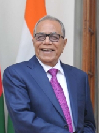

About Chancellor

Mr. Md. Abdul Hamid
Honorable President of the Peoples Republic of Bangladesh
His Excellency Mr. Abdul Hamid was born in 1944 at the village Kamalpur under Mithamoin Sub-District of Kishoregonj. He was matriculated from Nikly GC High School and had his IA and BA from Guru Dayal College in Kishoregunj. Later on he was graduated in Law form Dhaka Central Law College and joined the Bar for legal practice.
Mr. Hamid has a dedicated career in politics and social welfare. He involved in politics in 1959 as a member of Chattra League. In 1961 he took part in political movement against the autocratic rule of the then President Gen. Ayub Khan and he was sent to jail fro several times. He held various political offices including General Secretary of the College Student Union, President of Chatra League in Kishoregunj sub division, Vice President of Mymensingh District Chatra League and joined the Awami League in 1969.
Mr. Abdul Hamid participated at the glorious war of liberation in 1971. He went to India and led the independence struggle as the Chairman of Meghalaya recruiting camp in Agartala and Sub-Sector Commander of Bangladesh Liberation Force (Mujib Bahini) for the then Sunamgunj and Kishoregunj Sub-Divisions. On the final victory of 16 December 1971, he played the major catalyst’s role to repatriate the Bengali refugees staying in different camps of India’s Meghalaya state. He came back home on 10 January 1972 and celebrated the home coming of the Father of the Nation Bangabandhu Sheikh Mujibur Rahman, from a long time captivity at Pakistani jail, on the same day.
Immediately after his return to the newly liberated land, he administered the chair of Kishoregunj Relief and Rehabilitation Committee and was entrusted with responsibilities of the Vice President of Kishoregunj Awami League in 1974. After the cruel assassination of the Father of the Nation, Mr. Hamid was arrested by the then Gen. Zia’s autocratic military regime during 1976-78. He served as the President of District Awami League from 1978 to 2009 and also carried out the responsibilities of Kishoregonj District Bar Association President from 1990 to 1996. As a social activist and patron of cultural and educational initiatives, Mr. Hamid established several Primary Schools, High Schools and Colleges at Mithamoin Sub-District.
He has a luminous political trajectory. He was the youngest member elected for the Pakistan National Assembly in 1970 from Mymensingh, member of the Constituent Assembly 1972, elected MP for the National Parliament of Bangladesh in 1973, 1986, 1991, 1996, 2001 from Bangladesh Awami League. Mr. Hamid was the Deputy Speaker of the National Parliament from 1996 to 2001 and became the Speaker of the House from July to October 2001. He was the Deputy Leader of the Opposition from 2001 to 2006. Mr. Abdul Hamid became the Speaker of the Parliament again in 2009. He became the Acting President of the Republic on 14 March 2013. Mr. Abdul Hamid has been elected the 20th President of the People’s Republic of Bangladesh unopposed on 22 April 2013.
Mr. Abdul Hamid is married with 3 sons and a daughter. His interests rest on International Politics, Contemporary History and Comparative Study of Constitutions around the world.